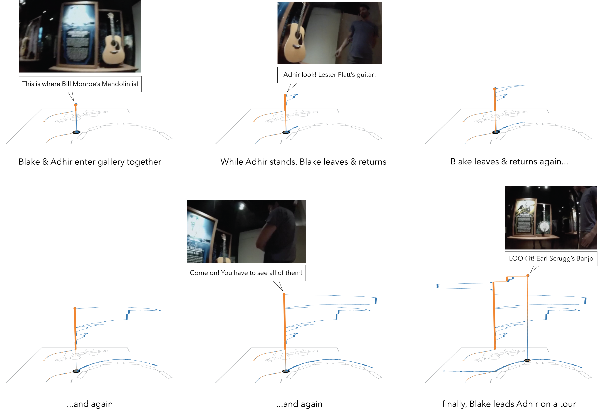

Figure 6. Pointillizer screenshots illustrating example interaction techniques to explore image data from the focal video. Adjusting the dot size to draw (A) small dots or (B) large dots, (C) reversing the pointillism process to layer circles over fully rendered images, and (D) resolving an image to quickly see the original image data.
